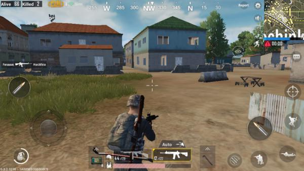
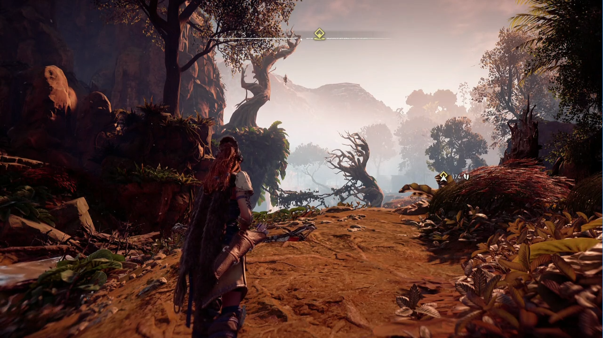
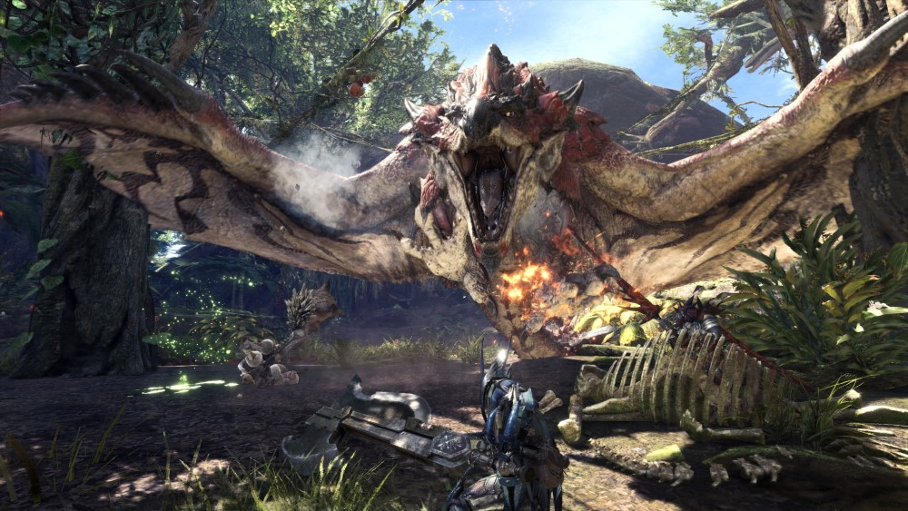

TPS (Third Person Shooter)
Définition
Le jeu de tir à la troisième personne (TPS ou jeu de tir en vue objective) est un type de jeu vidéo d'action en 3D
dans lequel le personnage du joueur est visible à l'écran pendant la partie.
Le plus souvent, la vue est prise à l'arrière du personnage. Le but de ces jeux consiste principalement à tirer.
Les jeux de tir à la troisième personne permettent aux joueurs de voir plus clairement la zone entourant l'avatar.
Ce point de vue améliore l'interaction entre le caractère et son environnement.
Cette perspective est également adaptée pour interagir avec des éléments autour du personnage et effectuer certaines actions,
comme sauter sur des plates-formes, s'engager dans un combat rapproché ou encore conduire un véhicule.
Examples de jeux dans cette catégorie :
- PUBG 
- GTA
- Horizon zero dawn 
- Monster Hunter 